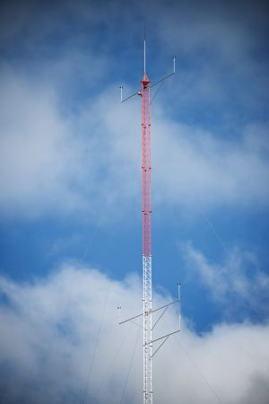

El Parque Eólico dispone de una torre meteorológica cuyos componentes se describen aquí. Los datos recogidos en ella se envían al SCADA. Los datos de viento (dirección e intensidad) recogidos en la Estación Meteorológica son independientes de los que se miden en cada aerogenerador, mediante anemómetros y veletas en el propio aerogenerador.

En el sinóptico principal de este Simulador, se dispone de los controles para simular la intensidad del viento y su dirección, así como para variar la temperatura ambiente, la presión atmosférica y la humedad ambiente. Ver en el tutorial.
Varíe los valores de estos tres últimos controles y observe la variación de la densidad del aire. La potencia generada por el aerogenerador es directamente proporcional a la densidad del aire.
¿Hay alguna combinación de temperatura ambiente, presión atmosférica y humedad que haga máxima la densidad del aire?